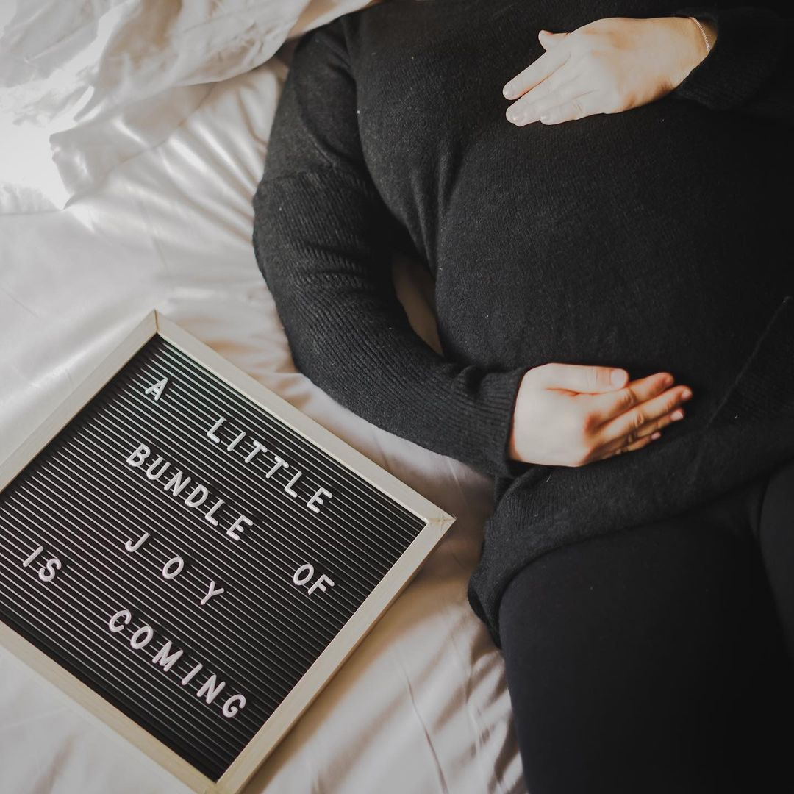
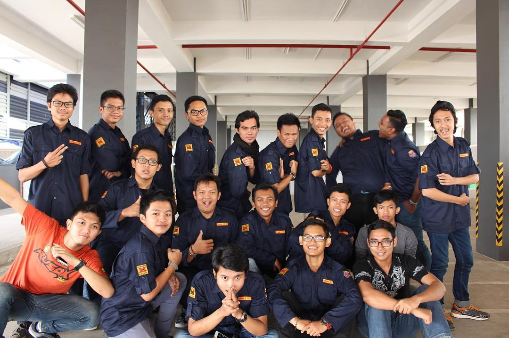

Selected work / ongoing edit
People held in
light and time.
A changing edit of portraits, celebrations, and the quiet edges of important days.

Shared light
Couples study

In celebration
Wedding frame

Before hello
Maternity frame

A milestone
Graduation frame